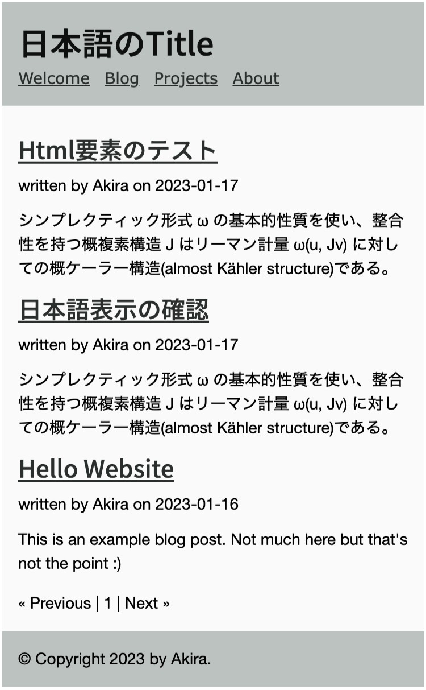

Quickstartの初期状態では、記事の一覧が表示されるページに、記事の全てのテキストが表示されます。たくさん記事を書いていくと見辛くなりますので、記事の抜粋だけ表示する機能を追加します。
記事を抜粋して表示する機能は、拡張機能として導入する必要があります。拡張機能は主にコミュニティによって作成されプラグインとして公開されています。
プラグインは、ルートの設定ファイルに記述すると起動時にインストールされます。
[project]
name = 日本語のTitle
[packages]
lektor-markdown-excerpt = 0.1
または、lektor plugins addのコマンドで導入できます。
$ lektor plugins add markdown-excerpt
lektor-markdown-excerptプラグインは、Jinjaテンプレート用のexcerptフィルタを提供します。
excerptフィルタは、ブログ記事のレンダリングを行うtemplates/macros/blog.htmlへ記述します。記事一覧ページと記事のページで制御を分けて書きます。
blog.htmlは2つありますので、templates/blog.htmlと間違えないようにして下さい。
...
on {{ post.pub_date }}
</p>
{{ post.body }}
{% if from_index %}
{{ post.body | excerpt }}
{% else %}
{{ post.body }}
{% endif %}
{% endmacro %}
